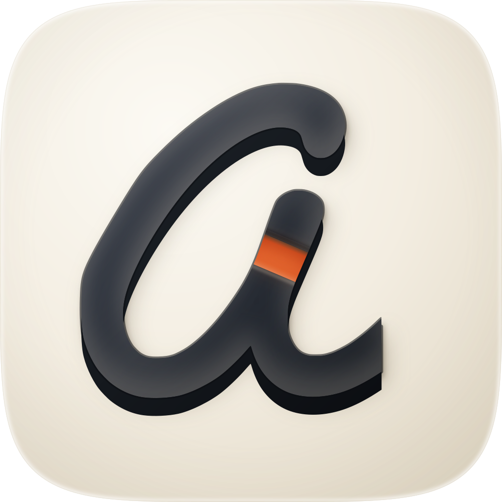
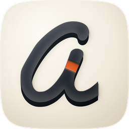
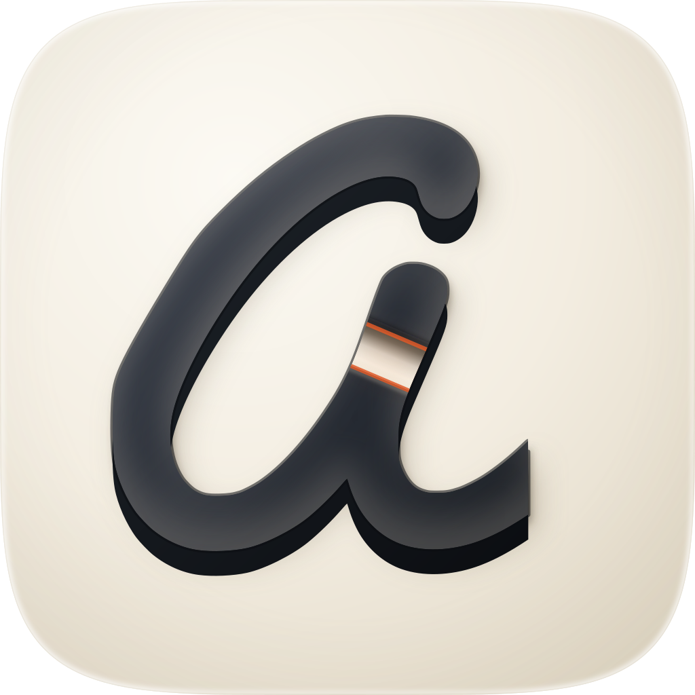
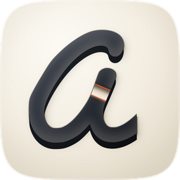
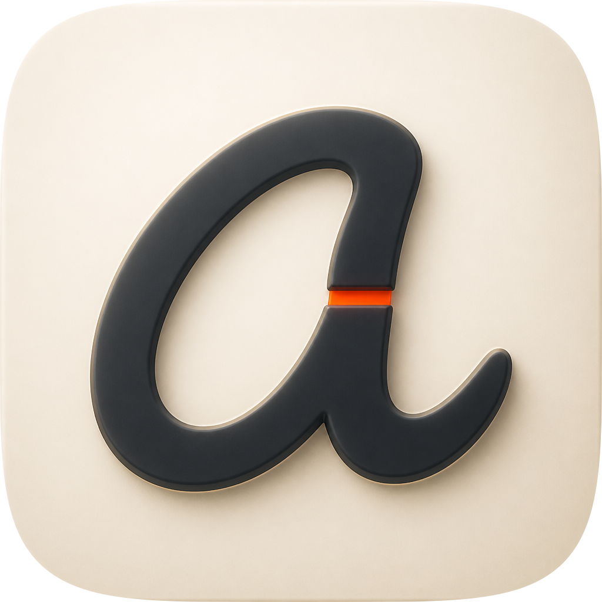
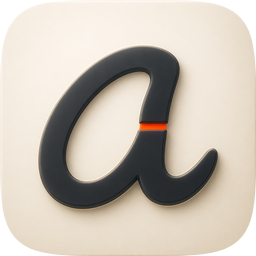

| Take | Hero at 1024, then renders at 128 / 64 / 48 / 32 / 16 css px (2× retina sources), plus the 16px squint magnified | Rubric | Verdict |
|---|---|---|---|
| A-master · icon.svghand-authored layered SVG — SHIPS |   |
11 / 12 | Checks 1–4 read off the renders above. The superellipse is a clip lifted from squircle-path.txt, so the silhouette is the family's to the pixel; four named layers (bg / mid / fg / highlight) sit over a swappable ground; nothing is baked. Figure–ground measures 19.4:1 and the letterform survives grayscale intact. The cut is the only take's device that is still legible at 32px and in the 48px grayscale cell. Loses check 10: identity leans on 0.54% accent coverage, so a Tinted variant that recolours it takes the icon back to the sibling's silhouette. Salvaged from C — a deeper, rounder under-edge (EXTRUDE 11 → 15), which is the one place the rasters read as more solid than the master did. |
| A2-open · icon-engineA2-open-3f19c4.svghand-authored layered SVG, alternate — substitutes for Engine B |   |
8 / 12 | The same geometry with the cut taken clean through to porcelain and the accent surviving only as a hair on the rim. Built to test this commission's one size claim, and it loses it: by 32px the void has closed to a pale nick and in grayscale it is gone, so the icon reads as an ordinary script a and the device is not nameable (checks 4 and 11). It is the more restrained object at 1024 and the more honest one conceptually — a hole is a hole — which is why it was built rather than argued about. |
| C-1 · icon-engineC-fracture-417464.pngGPT Image 2 raster, corpus-referenced — material target | 6 / 12 | Arrived independently at this composition from the brief, which is the useful result: the concept survives a reader who was not in the room. Fails check 1 — its corner is a rounded rect, not the family superellipse, visible against rows 1–2 in the ×6 cell. Fails check 4: it drew the cut as a hairline, which is gone by 32px. Its body carries a rounder and deeper under-edge than the master did, and that measurement is what the master took. | |
| C-2 · icon-engineC-fracture-5c4f6a-2.pngGPT Image 2 raster, corpus-referenced |   |
5 / 12 | The second raster take. Same two failures as C-1 — a baked rounded-rect corner and a hairline cut that does not survive 32px — and it drifts further: figure–ground falls to 12.9:1, the ground warms away from the family register, and the cut has rotated toward horizontal so it no longer runs square to the stroke it crosses, which is the whole claim about intent. Kept in the sheet because it is the clearest evidence that the hairline cut is what a model reaches for and why it cannot ship. |